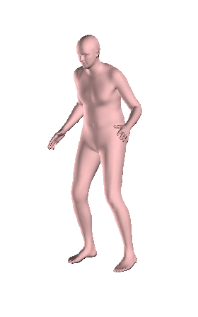

Understanding the Max Plank's UP project.
In this I would like to share the working of UP.
When trying to read the paper I couldn't didn't get the things clearly but it is the same SMPLify concept which has been also taken up in many of Max Plank's design which is palying major role in all of these.

They have designed a PCA model of complete bosy and giving the image as an input to the system they try to estimate the pose of the human in the image with a bound which is not explicitly mentioned but we find good results when the image satisfies the condition that the person covers below 500 pixels in the image. So using deeplab model they try to estimate the pose and also the keypoints either 14/91 based on the models you choose. This pose content is then used to estiamte the camera parameters and keypoints to optimize the model based on the keypoints skeleton using the SMPLify and again as usual the same reprojection error minimization concept is used to estimate the model. Thus we finally obtain a model shape which is similar to one's in the image. It has been mentioned in the paper that it almost works in 30fps which is really amazing.Below we can see original and the estimated model's image.
Comments
Comments powered by Disqus